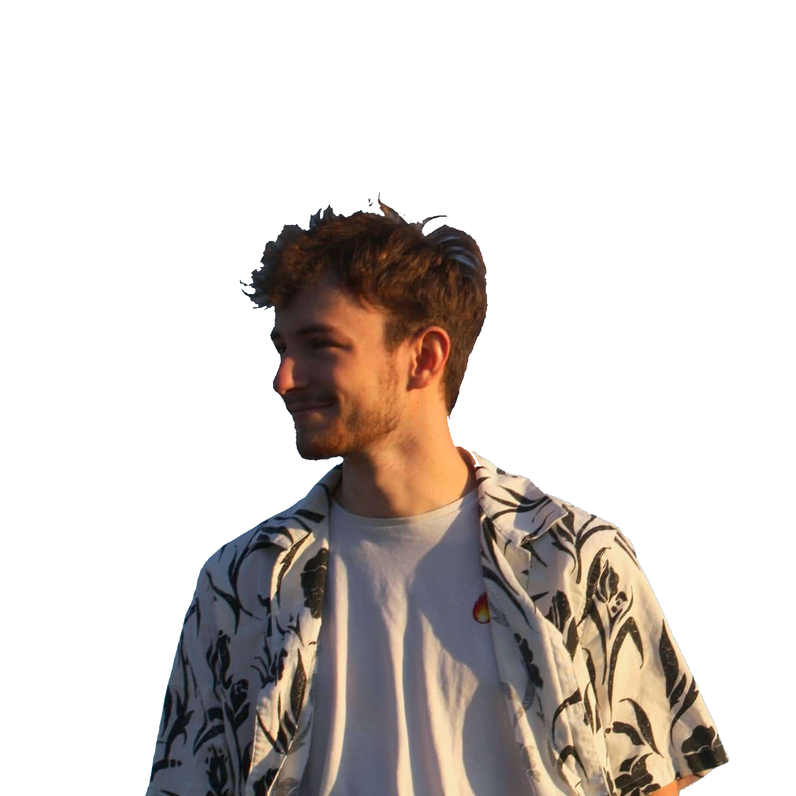

About Me
I am a Doctor in Optics, Photonics and Image Processing, having defended my PhD thesis on January 29th, 2026, at the Centre de Physique des Particules de Marseille (CPPM), France. My work comes at the intersection of optical instrumentation, image processing, and machine learning, with a strong focus on space science applications.
My PhD thesis focused on modeling the instrumental response of the Euclid space telescope's NISP (Near-Infrared Spectrometer and Photometer) instrument, carried out within the DISPERS project at CPPM. I developed novel methods combining Zernike polynomial decomposition and deep learning (CNNs, autoencoders) to characterize and reconstruct optical aberrations from Point Spread Functions (PSFs) of low-resolution space instruments.

Research interests
- Optical systems & space instrumentation (telescopes, optronics)
- Image processing & computational imaging
- Machine learning and deep learning for scientific applications
- Computer vision & remote sensing
- Signal processing
Education
-
PhD in Optics, Optronics and Image Processing — CPPM, Marseille, 2022-2026
Thesis: Modeling the instrumental response of the Euclid NISP instrument
Supervisors: W. Gillard, J. Zoubian - Master's Degree in Space Engineering (Space, Launchers & Satellites) — IPSA, Paris, 2020–2022
- CPGE MPSI/MP — Mathematics, Physics & Engineering Sciences, 2017–2019
Work experience
-
Data Processing Engineer Intern — CNES (French Space Agency), 2022
IASI-NG interferometer performance & spectral calibration algorithms aboard METOP-SG -
Research Assistant — Observatory of Geneva, 2021
Solar system dynamics — Mars ephemerides, Mars Express / ExoMars data analysis -
Research Assistant — IRAP, Tarbes, 2020
High-resolution spectropolarimetry of Beta Coronae Borealis with NEO-NARVAL
Skills
- Programming: Python, Jupyter, MATLAB / Simulink
- Deep learning: PyTorch, TensorFlow/Keras (CNNs, autoencoders, MLPs)
- Scientific computing: NumPy, SciPy, Astropy, scikit-learn, OpenCV
- CAD & FEA: CATIA V5, Patran/Nastran
- Languages: French (native), English (C1), Spanish (beginner)
Beyond research
I enjoy applying AI and machine learning to diverse and creative problems — from computer vision pipelines to training MLPs to predict wine aging characteristics. I am also a passionate astronomer and former Vice-President of the IPSA VEGA astronomy association, where I contributed to data analysis from Kepler/K2 and TESS missions and taught astrophotography and astrophysics to fellow students.
Looking for a postdoc
I am currently seeking a postdoc position in Canada or the United States in areas related to optical systems, computational imaging, machine learning for science, or space instrumentation. Feel free to reach out — I would love to discuss opportunities!